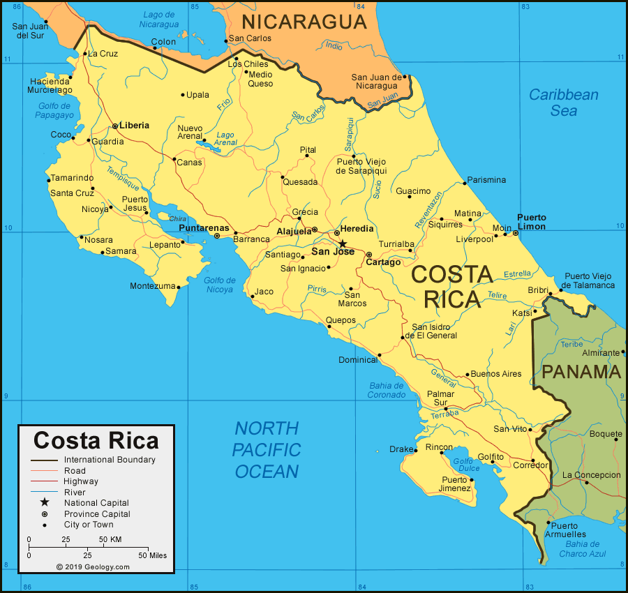

Costa Rica is a country in the Central American region of North America. Costa Rica is bordered by Nicaragua to the north, the Caribbean Sea to the northeast, Panama to the southeast, and the Pacific Ocean to the southwest, as well as maritime border with Ecuador to the south of Cocos Island.
Of all the Central American countries, Costa Rica is generally regarded as having the most stable and most democratic government. They are an independent country since 1821.